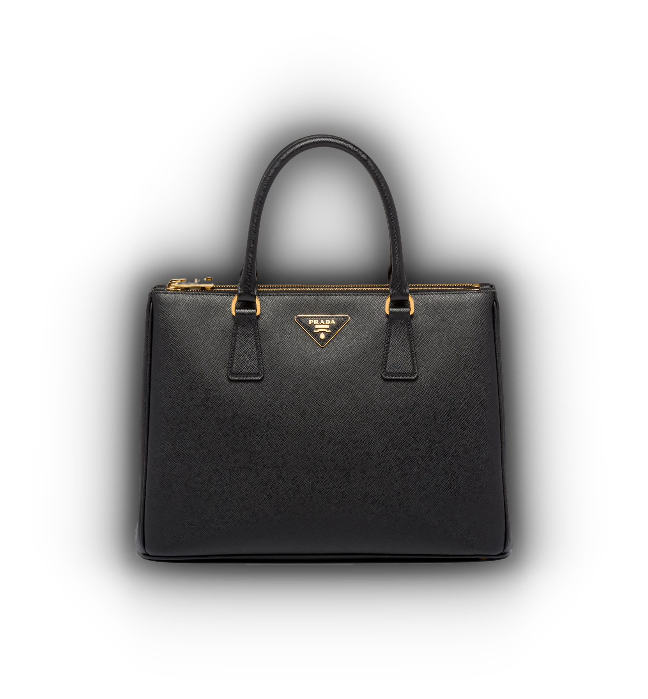
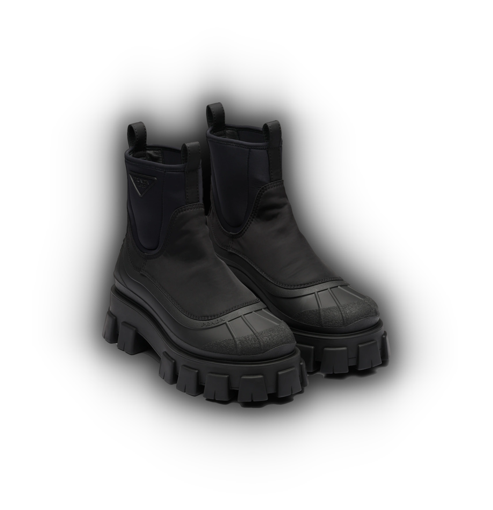
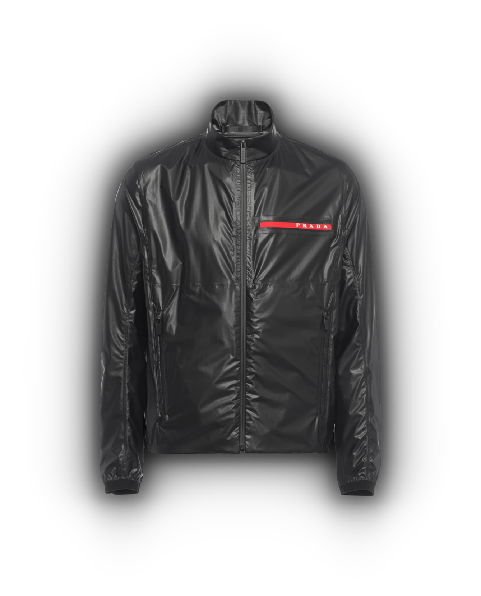
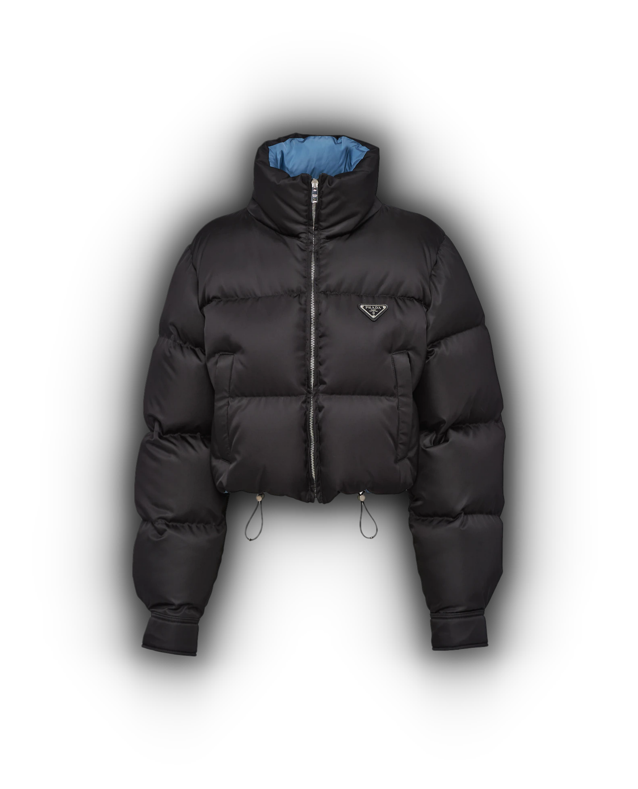

Ever since clothing could be viewed as a status symbol, luxury fashion has been around. Luxury fashion as we know it today first gained popularity in the late 1800s and early 1900s. Fashion houses like Hermes, Louis Vuitton, and Burberry ushered in a new era of high end clothing. This style is categorized by a high level of price, quality, and exclusivity. Brand identity is also a huge part of luxury fashion, these brands sell more than just clothing, they sell a lifestyle.
Founded in 1913, in Milan, Italy, by Mario Prada. Originally started as a leather goods shop, the brand has grown to become one of the most iconic high fashion companies in the world. They specialized in accessorie for a number of years but then later expanded into producing all types of clothing. Simple but sleek designs have become Prada's signature look. What sets Prada apart from many other luxury brands is their subtlety, while brands like Gucci and Louis Vuitton slap their logo all over their clothes, Prada focuses on marketing a sense of quiet elegance.
   